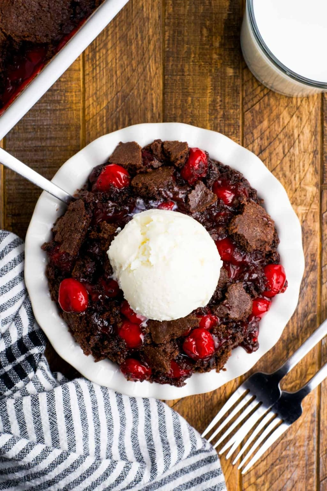

Chocolate Cherry Dump Cake

Description
This 3-ingredient chocolate cherry dump cake could not be easier! Just pie filling, chocolate cake mix, and butter—you'll have it ready to bake before you can say, 'cake'.
Yields: 12 servings
Prep time: 5 minutes
Total cooking time: 55 minutes
Ingredients
- Chocolate cake mix
- Cheery pie filling
- Melted butter
Steps
- Spray a 9×13-inch baking dish with nonstick cooking spray.
- Dump in the cherry pie filling.
- Dump in the chocolate cake mix.
- Dump in the butter. Except don’t really “dump” in the butter, melt it and drizzle it evenly on top of the cake mix.
- Bake at 350℉ for 50 minutes.
- Serve warm with a scoop of vanilla ice cream.
Home